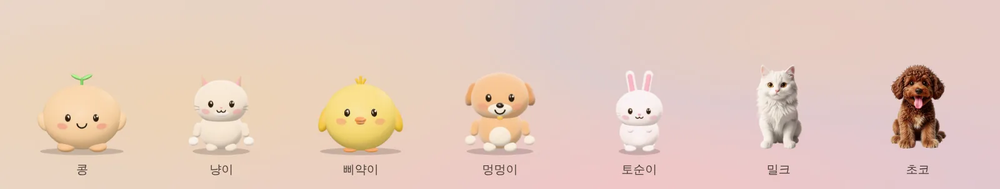
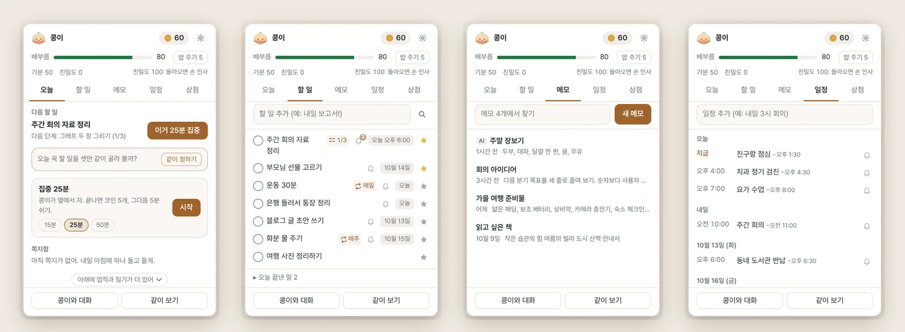
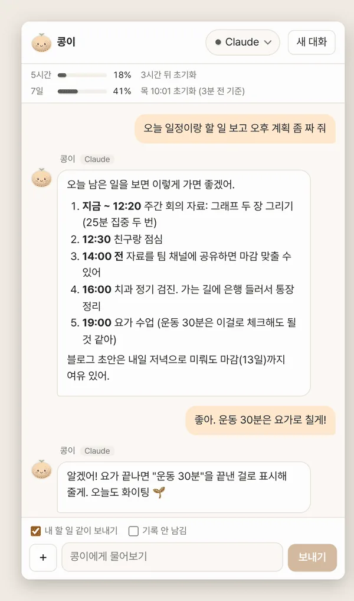
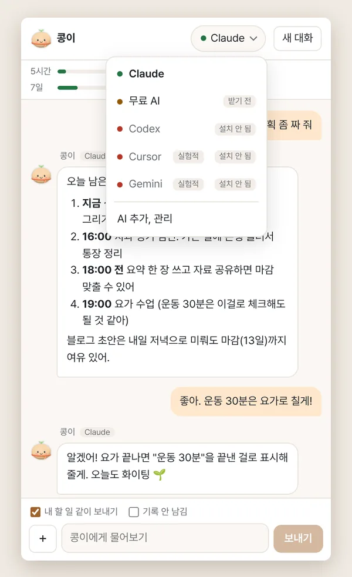

맥 · 윈도우 데스크톱 앱 · 베타
화면 위에 사는
작은 짝꿍
펫이 화면 아래를 걸어 다니다가, 누르면 오늘 할 일과 일정을 펼쳐 줘요. 계정도 서버도 없이, 내 컴퓨터 안에서요.

짝꿍은 이런 앱이에요
옆자리 짝꿍처럼,
화면 한쪽에 펫이 살아요
가만히 있다가 가끔 걸어 다니고, 창 위에 올라앉고, 마우스를 쳐다보고, 쓰다듬으면 하트를 띄워요. 펫을 누르면 오늘 할 일과 일정이 담긴 패널이 열리고, 우클릭하면 AI와 대화하거나 화면을 같이 보며 물어볼 수 있어요.
- 펫
- 기본 펫 다섯과 그림 친구 둘. 사진 한 장으로 나만의 펫도 만들어요.
- 비서
- 할 일, 메모, 일정, 집중 타이머, 하루 회고. "내일 3시 회의"처럼 한 줄이면 돼요.
- AI
- 이미 쓰는 Claude Code, Codex, Cursor, Gemini CLI와 대화해요. 없으면 컴퓨터 안에서만 도는 무료 AI를 받아요.

펫
쓰다듬고, 던지고,
밥도 줘요
드래그로 옮기고, 잡아서 휙 놓으면 통통 튀어요. 좌우로 문지르면 쓰다듬기예요. 기분과 배부름, 친밀도가 있어서 오래 안 놀아 주면 삐지기도 해요.
- 할 일을 끝내면 코인이 쌓이고, 코인으로 밥과 장난감, 집을 사 줘요
- 모습은 피규어, 게임 캐릭터, 실사, 복슬복슬(시험), 납작한 2D 중에 골라요
- 친구 펫을 세 마리까지 데려와 같이 돌아다녀요
- 전체 화면으로 일하거나 발표할 때는 알아서 숨어요
비서
할 일, 일정, 메모를
패널 하나에
펫을 누르면 오늘, 할 일, 메모, 일정, 상점 탭이 있는 패널이 열려요. 다음에 할 일과 그 단계, 바로 시작하는 집중 타이머, 오늘 일정이 한눈에 보여요.
- 빠른 입력 어디서든 단축키 한 번. "내일 3시 회의", "매일 운동"처럼 써도 날짜와 시각을 알아들어요 (한국어, 영어)
- 미리 알림 일정은 10분 전, 할 일은 하루 전과 1시간 전. 알림에서 10분, 1시간, 내일 아침으로 미뤄요
- 집중 타이머 15, 25, 50분. 끝내면 코인 3, 5, 10개
- 캘린더 가져오기 구글 캘린더 같은 캘린더의
.ics비공개 주소를 넣으면 30분마다 가져와요



AI
이미 쓰는 AI와
펫이 대신 이야기해요
짝꿍은 AI를 따로 갖고 있지 않아요. 이 컴퓨터에 설치해 둔 AI 프로그램을 불러 펫의 말투로 대화해요. 하나도 없으면 컴퓨터 안에서만 도는 무료 AI(Qwen3)를 받아 쓰면 돼요.
- 내 할 일 같이 보내기를 켜면 "오늘 뭐부터 할까?"에 내 할 일과 일정을 보고 답해요
- 같이 보기 화면 일부를 골라 AI에게 보여 주며 물어봐요
- "내일 장보기 할 일로 넣어 줘"라고 하면 바로 넣어 줘요. 지우거나 고칠 땐 펫이 먼저 물어봐요
- 성격과 말투도 골라요. 다정한 친구, 존댓말 비서, 츤데레, 차분한 선생님
더 챙겨 주는 것
- 습관 잔디반복 할 일을 날마다 체크하고 최근 12주를 잔디로 봐요. 끊겨도 벌은 없어요.
- 아침 계획꼭 할 일 셋과 일정 사이 집중 시간을 같이 정해요. AI 없이도 돼요.
- 자라는 펫함께한 날만큼 자라고, 계절과 명절마다 옷을 갈아입어요.
- 주간 카드이번 주 기록을 귀여운 카드 그림으로 저장해요.
- 내보내기와 백업메모는 .md, 할 일은 .csv, 일정은 .ics로. 폴더 하나로 다른 컴퓨터에 옮겨요.
- 접근성말풍선 읽어 주기, 키보드로 펫 다루기, 운영체제의 움직임 줄이기 설정 따르기.
내 펫 만들기
사진 한 장이면
우리 집 아이가 펫이 돼요
반려동물이나 좋아하는 인형 사진을 고르면 배경을 지워 주고, 지우개와 복원 붓으로 다듬은 뒤 모습과 이름을 정해요. 배경 지우기는 이 컴퓨터 안에서 해요.


- 사진 고르기
- 다듬기
- 모습과 이름
모습은 넷 중에 골라요
- 사진 그대로오린 사진을 그대로 써요. 사진은 컴퓨터 밖으로 나가지 않아요.
- 2.5D 입체사진의 깊이를 재서 숨 쉬듯 살짝 입체감 있게 움직여요. 이것도 이 컴퓨터 안에서요.
- 입체 피규어Claude나 Codex가 사진을 보고 360도로 돌려 볼 수 있는 피규어를 만들어요. 다듬은 사진 한 장을 그 AI에 보내요.
- AI 일러스트귀여운 그림으로 다시 그려요. 무료 그림 서버(Hugging Face), Gemini 앱에서 직접, 또는 내 컴퓨터에서(메모리 8GB 이상) 그릴 수 있어요.
만든 펫은 .jjpet 파일 하나로 친구에게 줄 수 있어요.
개인정보
서버가 없어요.
모두 내 컴퓨터에 남아요
짝꿍 자체는 서버가 없고 계정도 필요 없어요. 할 일, 메모, 일정, 코인, 펫, 설정은 모두 이 컴퓨터의 사용자 데이터 폴더에 있어요.
이 컴퓨터에만 남는 것
- 할 일, 메모, 일정, 일기, 코인과 펫 상태, 펫이 기억하는 것
- 채팅 창의 최근 대화 40개 (붙인 그림은 빼고)
- 사진 펫 배경 지우기, 2.5D 깊이 재기, 무료 AI 대화, 내 컴퓨터에서 그리기
- 구글 캘린더와 Hugging Face 토큰 (운영체제 열쇠로 암호화할 수 있으면 암호화)
- 진단 기록. 질문, 답, 할 일과 일정 제목은 남기지 않아요
같이 보기로 찍은 화면은 디스크에 저장하지 않아요. 화면이나 그림을 실은 질문은 Claude Code와 Codex가 자기 대화 기록에도 남기지 않게 불러요. 보낸 그림은 그 AI 회사의 보관 정책을 따라요.
밖으로 나가는 것 그 기능을 쓸 때만요
| 기능 | 어디로 | 무엇이 |
|---|---|---|
| AI 대화, 같이 보기 | 내가 고른 AI 프로그램이 연결된 곳 (Anthropic, OpenAI, Cursor, Google) | 질문과 고른 화면 그림. 펫 이름과 성격, 허락한 기억이 같이 가요. "내 할 일 같이 보내기"를 켜면 안 끝낸 할 일 제목과 마감, 오늘 남은 일정 제목도요 |
| 메모 요약, 다듬기, 할 일로 쪼개기 | 내가 고른 AI | 그 메모 글 (고른 부분만 고르면 그 부분) |
| 일기를 AI로 다듬기 | 내가 고른 AI | 그날 숫자와 펫이 쓴 일기 문장. 할 일 제목은 보내지 않아요 |
| 입체 피규어 만들기 | Claude 또는 Codex | 다듬은 사진 한 장 |
| AI 일러스트 (무료 서버) | Hugging Face의 무료 그림 서버 (다른 사람이 운영) | 고른 사진, 바라는 점, 넣었다면 HF 토큰 |
| 캘린더 가져오기 | 내가 넣은 .ics 주소 | 요청만 (받아 오기) |
| 구글 캘린더로 보내기 | 구글 캘린더 API (연결했을 때만) | 짝꿍에서 넣은 일정의 제목, 시각, 알림 |
| 모델과 도구 받기 | GitHub, Hugging Face, jsDelivr, unpkg, PyPI 등 | 요청만 (받아 오기) |
| 업데이트 확인, 모델 목록 | GitHub | 요청만 (앱 이름과 버전) |
이 사이트도 쿠키나 방문 추적을 쓰지 않아요. 최신 버전을 알려고 GitHub에 한 번 물어보는 게 전부예요.
받기
내 컴퓨터에 데려가기
무료예요. 아직 애플과 마이크로소프트의 개발자 서명을 받지 않은 베타라 처음 열 때 한 번 경고가 떠요. 아래 자주 묻는 질문에 넘기는 법이 있어요.
필요한 것과 크기
- 맥
- macOS 12(Monterey) 이상. Apple 칩(M1 이후)과 Intel 둘 다
- 윈도우
- Windows 10 이상, 64비트(x64). ARM 윈도우는 아직 지원하지 않아요
- 리눅스 (시험판)
- x64. 데스크톱 환경(X11 또는 Wayland)과 투명 창이 되는 컴포지터
- 설치 파일
- 리눅스 0.1.0 실측(2026-10-11): tar.gz 약 128MB, AppImage 약 108MB. 맥과 윈도우는 아직 재지 않았어요. 릴리스가 열리면 단추 옆에 진짜 크기가 보여요
- 디스크
- 앱 약 310MB (리눅스 0.1.0 풀린 크기 기준)
- AI 대화
- Claude Code, Codex, Cursor, Gemini CLI 중 하나, 또는 무료 AI 모델(Qwen3 1.7B 약 940MB, 0.6B 약 400MB). 없어도 펫, 할 일, 메모, 일정은 다 돼요
- 쓸 때만 받는 것
- 사진 펫 배경 지우기 모델 약 170MB와 엔진 약 17MB, 2.5D 깊이 모델 약 27MB
- 내 컴퓨터에서 그리기
- 메모리 8GB 이상, 빈 공간 7~20GB (엔진에 따라 약 5.2GB 또는 약 16GB를 받아요)
자주 묻는 질문
맥에서 "확인할 수 없어 열지 않았다"는 창이 떠요
아직 애플 개발자 서명 전이라 처음 한 번 떠요. macOS 15(Sequoia) 이상 기준이에요.
- dmg를 열고 Jjakkung을 응용 프로그램 폴더로 끌어 넣어요.
- 응용 프로그램 폴더에서 열고, 경고 창이 뜨면 완료를 눌러요. 휴지통으로 옮기지 마세요.
- 시스템 설정 → 개인정보 보호 및 보안 → 아래쪽 "보안" 칸에서 그래도 열기를 누르고 맥 암호를 넣어요.
- 다시 뜨는 창에서 그래도 열기를 누르면 화면에 펫이 나와요.
이전 macOS에서는 앱을 우클릭해 "열기"를 눌러도 돼요. 그래도 안 열리면 터미널에서 아래 한 줄을 실행하고 다시 열어요. 인터넷에서 받은 파일 표시를 지우는 명령이에요.
xattr -dr com.apple.quarantine /Applications/Jjakkung.appdmg 안에서 바로 열지 말고 꼭 응용 프로그램 폴더로 옮긴 뒤 열어 주세요. 그래야 자동 업데이트가 돼요.
윈도우에서 "Windows의 PC 보호" 파란 창이 떠요
서명이 없는 새 앱이라 SmartScreen이 띄우는 창이에요. 추가 정보를 누르면 보이는 실행을 눌러요. 관리자 권한 없이 바로 설치되고 펫이 나와요.
회사 컴퓨터에서 "실행" 단추 없이 막힌다면 관리자가 막아 둔 거라, 서명한 판이 나올 때까지는 설치할 수 없어요.
Apple 칩인지 Intel인지 모르겠어요
화면 왼쪽 위 사과 메뉴 → 이 Mac에 관하여에서 "칩"이 Apple M으로 시작하면 Apple 칩이에요. "프로세서"에 Intel이라고 쓰여 있으면 Intel이에요.
AI 프로그램이 하나도 없어도 쓸 수 있나요?
네. 펫, 할 일, 메모, 일정은 AI 없이 다 돼요. 대화하고 싶으면 채팅 창의 AI 고르기에서 "무료 AI"를 고르세요. 처음 한 번 모델을 받고, 그다음엔 인터넷 없이 이 컴퓨터 안에서만 돌아요. 큰 AI보다 답이 짧고 단순해요.
정말 무료예요?
네, 앱은 무료이고 회원 가입도 없어요. Claude Code 같은 AI 프로그램과 대화할 때는 그 프로그램의 요금제와 사용량을 따라요. 무료 AI와 사진 그대로 펫 만들기는 사용료가 없어요.
펫이 작업을 가려요
펫 위에서 휠을 그냥 굴리면 아래 창으로 넘어가요. 단축키로 잠깐 숨기거나, 설정 → 펫에서 "가끔 돌아다니기"를 끄고 크기를 줄여 보세요. 발표나 화면 공유 중에는 저절로 숨어요.
업데이트는 어떻게 해요?
맥과 윈도우는 새 버전을 미리 받아 두고 펫이 "다시 켜서 업데이트"를 띄워요. 누를 때만 설치해요. 리눅스는 펫이 릴리스 페이지를 열어 줘요. 설정 → 정보에서 새 버전 알림을 끌 수 있어요.
리눅스에서도 되나요?
시험판이에요. tar.gz는 풀어서 안의 jjakkung을 실행하고, AppImage는 실행 권한(chmod +x)을 주고 실행해요. 배포판에 따라 libfuse2가 필요해요. 같이 보기와 창 위에 올라앉기는 데스크톱 환경에 따라 안 될 수 있어요.
지우려면요?
맥은 응용 프로그램 폴더에서 Jjakkung을 휴지통으로, 윈도우는 설정 → 앱 → 설치된 앱에서 제거해요. 앱을 지워도 할 일과 펫은 남아서 다시 설치하면 이어서 써요. 완전히 지우려면 데이터 폴더도 지워요.
- 맥
~/Library/Application Support/jjakkung - 윈도우
%APPDATA%\jjakkung - 리눅스
~/.config/jjakkung